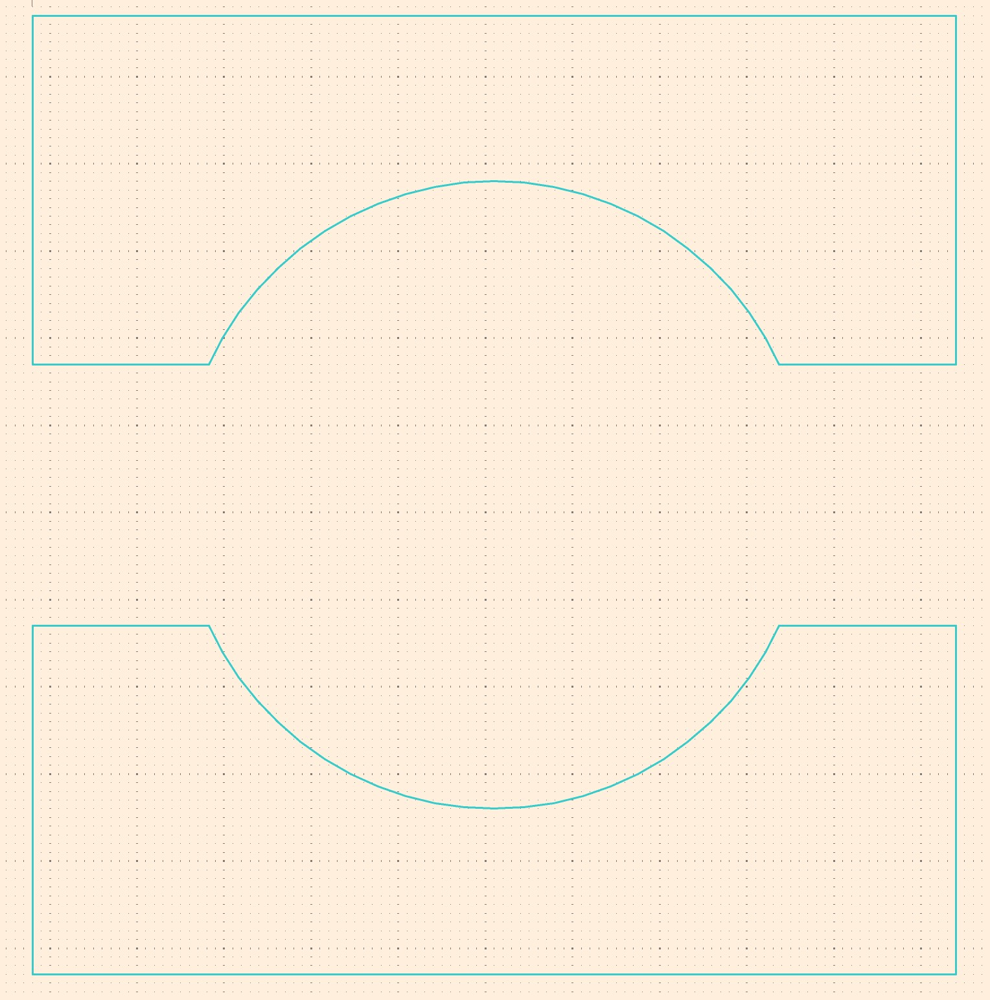

I find it quite tedious to create complex pads or footprints in the KiCad editor itself.
The main problem is that many manufacturers specify their part dimensions quite tricky for them to be
replicated in KiCad, since it does not offer the extended sketch features of programms like Fusion 360.
The following steps should function as a guide to create the pads for this Inductor.
Create sketch in Fusion with the dimension from the datasheet
Export it by right-clicking on the sketch as a .dxf file. In the export menu uncheck all three boxes.
You can use this .dxf file to directly play along in KiCad.
Create new footprint in KiCad
Import DXF: File → Import → Graphics or CTRL+SHIFT+F. Leave the import scale as 1 and uncheck "group supported items".

Select all the shapes belonging to one pad
Right-click → "Create from selection" → "Create polygon from selection…" and use the option "Use centerlines"
Change created pads to copper
Create new pads and fit them completly inside the shape
Right-click on the pad and select "Edit Pad as Graphic Shapes" or press CTRL+E
Press CTRL+E to leave the Pad Edit Mode. The pad now should have the right shape.